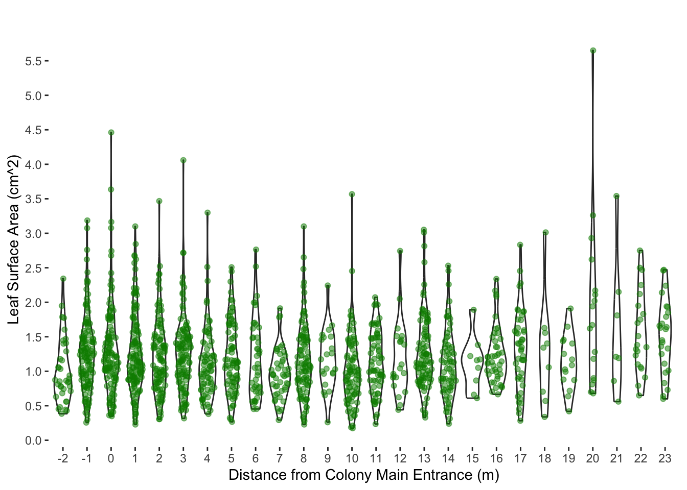
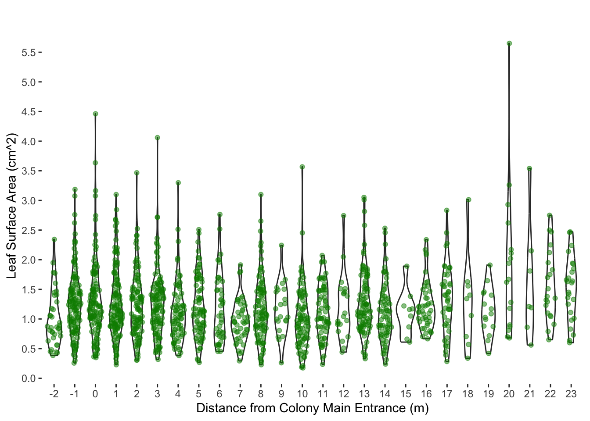

Area Analysis
Jaxson Freund
2024-02-27
Last updated: 2024-02-29
Checks: 2 0
Knit directory: myproject/
This reproducible R Markdown analysis was created with workflowr (version 1.7.1). The Checks tab describes the reproducibility checks that were applied when the results were created. The Past versions tab lists the development history.
Great! Since the R Markdown file has been committed to the Git repository, you know the exact version of the code that produced these results.
Great! You are using Git for version control. Tracking code development and connecting the code version to the results is critical for reproducibility.
The results in this page were generated with repository version 92a2261. See the Past versions tab to see a history of the changes made to the R Markdown and HTML files.
Note that you need to be careful to ensure that all relevant files for
the analysis have been committed to Git prior to generating the results
(you can use wflow_publish or
wflow_git_commit). workflowr only checks the R Markdown
file, but you know if there are other scripts or data files that it
depends on. Below is the status of the Git repository when the results
were generated:
Ignored files:
Ignored: .Rhistory
Ignored: .Rproj.user/
Ignored: myproject/.Rhistory
Ignored: myproject/.Rproj.user/
Note that any generated files, e.g. HTML, png, CSS, etc., are not included in this status report because it is ok for generated content to have uncommitted changes.
These are the previous versions of the repository in which changes were
made to the R Markdown
(myproject/analysis/area_analysis.Rmd) and HTML
(myproject/docs/area_analysis.html) files. If you’ve
configured a remote Git repository (see ?wflow_git_remote),
click on the hyperlinks in the table below to view the files as they
were in that past version.
| File | Version | Author | Date | Message |
|---|---|---|---|---|
| Rmd | 92a2261 | Jaxson Freund | 2024-02-29 | wflow_publish(all = TRUE) |
| Rmd | 056c039 | Jaxson Freund | 2024-02-27 | R |
| html | 056c039 | Jaxson Freund | 2024-02-27 | R |
Data
# A tibble: 1,550 × 2
Distance Area
<fct> <dbl>
1 -2 0.781
2 -2 0.874
3 -2 1.45
4 -2 0.443
5 -2 1.16
6 -2 0.863
7 -2 0.81
8 -2 1.05
9 -2 1.03
10 -2 0.939
# ℹ 1,540 more rowsVisualize the data
 

# A tibble: 26 × 3
Distance Mean SE
<fct> <dbl> <dbl>
1 -2 1.01 0.0767
2 -1 1.27 0.0474
3 0 1.31 0.0590
4 1 1.27 0.0499
5 2 1.23 0.0527
6 3 1.26 0.0511
7 4 1.12 0.0577
8 5 1.21 0.0568
9 6 1.19 0.0876
10 7 0.966 0.0524
# ℹ 16 more rowsStatistics
Df Sum Sq Mean Sq F value Pr(>F)
Distance 25 27.8 1.1121 3.685 2.74e-09 ***
Residuals 1524 459.9 0.3018
---
Signif. codes: 0 '***' 0.001 '**' 0.01 '*' 0.05 '.' 0.1 ' ' 1$statistics
MSerror Df Mean CV
0.3017987 1524 1.220206 45.02206
$parameters
test name.t ntr StudentizedRange alpha
Tukey Distance 26 5.210735 0.05
$means
Area std r se Min Max Q25 Q50 Q75
-1 1.2685682 0.5440600 132 0.04781583 0.256 3.186 0.89475 1.2440 1.50225
-2 1.0075946 0.4666685 37 0.09031457 0.384 2.343 0.71300 0.8630 1.28900
0 1.3095806 0.6564874 124 0.04933417 0.349 4.462 0.94325 1.2070 1.55200
1 1.2668134 0.5776422 134 0.04745765 0.228 3.100 0.88350 1.1340 1.58075
10 1.0106136 0.5150416 88 0.05856219 0.174 3.567 0.67525 0.9515 1.26750
11 1.1398406 0.4386382 69 0.06613542 0.235 2.072 0.86000 1.0930 1.48900
12 1.1920952 0.5417438 21 0.11988063 0.441 2.744 0.90900 1.0420 1.45900
13 1.2853053 0.5317337 95 0.05636336 0.329 3.052 0.90550 1.1500 1.58600
14 1.1091429 0.4891396 70 0.06566133 0.239 2.530 0.77425 1.0370 1.34800
15 1.1121111 0.3901543 9 0.18312069 0.610 1.891 0.86600 1.1590 1.22000
16 1.2313409 0.4054133 44 0.08281945 0.666 2.338 0.95600 1.1375 1.44300
17 1.3291778 0.5662934 45 0.08189406 0.283 2.833 0.91800 1.3490 1.62900
18 1.2903333 0.7899096 9 0.18312069 0.338 3.013 0.70400 1.3420 1.55700
19 1.1270667 0.4003059 15 0.14184468 0.419 1.909 0.87600 1.0880 1.41900
2 1.2268774 0.5430265 106 0.05335876 0.306 3.467 0.84100 1.1690 1.49575
20 1.9064706 1.2458729 17 0.13323987 0.680 5.650 0.90000 1.6700 2.17000
21 1.6171429 1.0047838 7 0.20763935 0.560 3.540 1.02500 1.2100 1.98000
22 1.5690476 0.5954150 21 0.11988063 0.650 2.750 1.10000 1.3800 1.95000
23 1.5104000 0.5356575 25 0.10987241 0.600 2.470 1.11000 1.6100 1.85000
3 1.2631379 0.5508285 116 0.05100699 0.318 4.060 0.92625 1.2365 1.50200
4 1.1206974 0.5026705 76 0.06301615 0.381 3.299 0.77125 1.0505 1.33225
5 1.2098148 0.5112562 81 0.06104023 0.267 2.508 0.84400 1.1210 1.66300
6 1.1871860 0.5744438 43 0.08377693 0.453 2.764 0.72350 1.0540 1.55500
7 0.9659348 0.3553319 46 0.08099902 0.293 1.912 0.74200 0.9470 1.15825
8 1.1664694 0.5291474 98 0.05549395 0.228 3.100 0.82975 1.0830 1.47700
9 1.1631364 0.4310594 22 0.11712439 0.261 2.243 0.96475 1.1050 1.48250
$comparison
NULL
$groups
Area groups
20 1.9064706 a
21 1.6171429 ab
22 1.5690476 ab
23 1.5104000 ab
17 1.3291778 b
0 1.3095806 b
18 1.2903333 b
13 1.2853053 b
-1 1.2685682 b
1 1.2668134 b
3 1.2631379 b
16 1.2313409 b
2 1.2268774 b
5 1.2098148 b
12 1.1920952 b
6 1.1871860 b
8 1.1664694 b
9 1.1631364 b
11 1.1398406 b
19 1.1270667 b
4 1.1206974 b
15 1.1121111 b
14 1.1091429 b
10 1.0106136 b
-2 1.0075946 b
7 0.9659348 b
attr(,"class")
[1] "group"